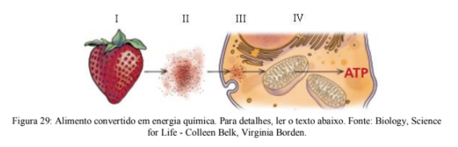
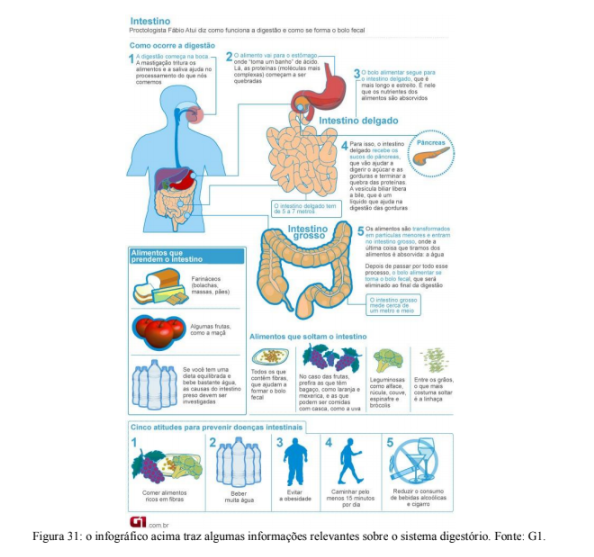
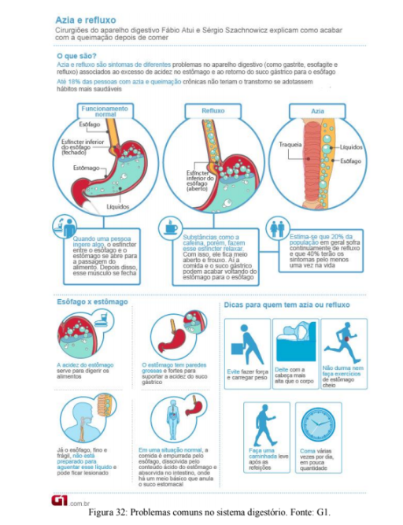
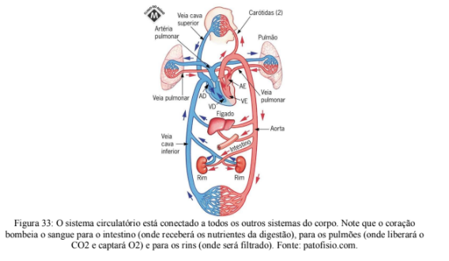
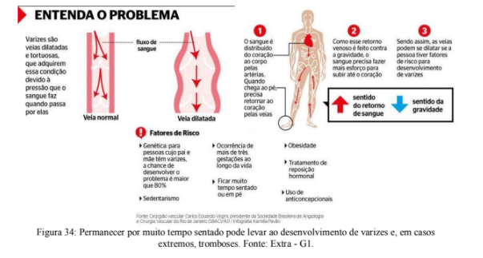

Capítulo 5
OS VÍRUS IMPACTAM TODOS OS SETORES DA SOCIEDADE
QuestãoVocê já foi diagnosticado com uma virose? Lembra qual foi a orientação médica? Ou quem sabe já ouviu a piada: "Quanto tempo demora a curar uma virose sem tomar remédios? Uma semana. E tomando remédios? Sete dias".
Pois bem, as viroses são doenças infecciosas causadas por vírus e geralmente não existem remédios específicos para trata-las. Os remédios prescritos pelos médicos servem, na maior parte dos casos, para aliviar os sintomas, tais como febre e dores no corpo.
Os estudos cuidadosos que as indústrias farmacêuticas têm feito ou financiado permitem entender com detalhes o mecanismo de infecção e o comportamento dos diferentes tipos de vírus. Até agora a forma mais eficiente lidar com os vírus é a prevenção através da vacinação e higiene.
Mas não é apenas o setor farmacêutico que se envolve nessa questão. Você consegue explicar como uma virose pode afetar a indústria têxtil, por exemplo?
ContextualizandoOs vírus são parasitas intracelulares obrigatórios, o que significa que são inertes fora das células hospedeiras. Existem vírus especializados em infectar qualquer tipo de ser vivo. Bactérias, fungos e plantas também contraem viroses!
Existe um grande conjunto de viroses que atacam plantas e podem destruir plantações inteiras. A Doença Azul é uma virose que afeta as plantas de algodão prejudicando a produção da fibra. Como as viroses são contagiosas, essa contaminação pode ter efeitos econômicos severos. No caso de um surto da Doença Azul, a Indústria têxtil seria bastante afetada, pois a fibra de algodão é a fibra vegetal mais consumida pelo setor.
Você percebe que fica cada vez mais evidente como a vida na Terra se sustenta a partir de uma complexa rede de interações? Pequenas alterações podem provocar uma reação em cadeia que desestabiliza o equilíbrio ecológico!
VOCÊ SABIA?
As viroses são consideradas doenças infecciosas.
Acesse o vídeo clicando no link a seguir:
Doenças infecciosas são aquelas causadas quando um organismo estranho invade e debilita o corpo de outro. Agente patogênico é o nome dado ao organismo que causa a doença e hospedeiro é o nome dado ao organismo que sofre a doença.
Exemplo: a gripe é a doença infecciosa, cujo agente patogênico é um vírus e o hospedeiros são pessoas que foram contaminadas.
(RE)CONSTRUINDO CONHECIMENTOS
Os vírus são seres formados por uma porção de material genético (DNA ou RNA) envolto por uma estrutura de natureza proteica. Como não apresentam organização celular, não sintetizam substâncias, não degradam energia e não reproduzem por si próprios, por isso não são incluídos entre os seres vivos. Contraditoriamente, possuem algumas características comuns aos organismos vivos: presença de genes e capacidade de reprodução, ainda que à custa das organelas (estruturas responsáveis pelo funcionamento) presentes na célula hospedeira.
Os vírus têm, portanto, esta dualidade: não apresentam todas as propriedades necessárias para manifestar aquilo que se convencionou chamar “vida” e tampouco podem ser simplesmente igualados a um agregado de moléculas inerte. Por essas razões, consideramos os vírus como entidades biológicas, derivados e dependentes dos organismos vivos, com os quais compartilham algumas de suas características quando se encontram na condição de parasitas intracelulares.
O que isso significa na prática? Significa que os vírus só apresentam algum tipo de atividade quando infectam (invadem) uma célula viva. A entrada na célula viva desencadeia uma série de reações que induzem a própria célula hospedeira a produzir dezenas ou mesmo milhares de cópias daquele vírus inicial. Essa situação pode provocar a morte da célula hospedeira e, consequentemente, a liberação de todas as cópias do vírus, que agora estão disponíveis para infectar outras células (figura 22).
Figura 22: Ciclo reprodutivo de um vírus que ataca bactérias. Os vírus se ligam à parede celular da bactéria e injetam seu material genético, que contém todas as informações para construir vírus idênticos. As estruturas celulares da bactéria são "sequestradas" para produzir cópias em série do vírus. Essa célula bacteriana eventualmente morre e liberta uma grande quantidade dessas cópias produzidas. Cada uma dessas cópias poderá repetir esse processo em novas células, por isso a piora dos sintomas de doenças virais pode ser extremamente rápida. Fonte: Escola Kids.
Os vírus não se alimentam, não se locomovem, não precisam descansar. Podemos dizer que os vírus são "máquinas de se reproduzir". O corpo dos vírus é minúsculo (figura 23), na maioria dos casos é tão pequeno que não pode ser observado em microscópios normais, apenas nos microscópios eletrônicos (que são mais potentes).
Acesse o vídeo clicando no link a seguir:

A estrutura dos vírus é bastante simples: uma capa reforçada protegendo o material genético (figura 24). O material genético (RNA na maior parte dos casos, em menor frequência DNA) é a molécula que carrega as informações utilizadas na replicação (produção de cópias) dos vírus. Empacotando e protegendo o material genético, existe uma estrutura composta por proteínas chamada de capsídeo. Além disso, as proteínas presentes na superfície do capsídeo atuam no reconhecimento e ligação às células que serão infectadas. Alguns vírus tem ainda uma estrutura O envelope não está presente em todas as linhagens de vírus, mas quando presente é formado por glicoproteínas (proteínas que contém lipídeos) e se envolve na ancoragem, e penetração da célula.
As proteínas do capsídeo e do envelope variam entre as linhagens de vírus, consequentemente, a forma do vírus também varia. Apesar do bacteriófago (figura 23) ser o mais lembrado por sua estrutura peculiar, existem vírus esféricos, cilíndricos, com diferentes formatos geométricos, etc (figura 25).
PARA ENTENDER MAIS...
De onde vêm os vírus?
Já sabemos que há um antigo debate para definir se os vírus são ou não seres vivos. Vamos falar sobre outro tema muito discutido que envolve os vírus: a origem evolutiva desse grupo. Entre os virologistas (cientistas que estudam os vírus) são reconhecidas três principais explicações:
Hipótese Progressiva: os vírus surgiram a partir de elementos genéticos que desenvolveram a habilidade de se movimentar de uma célula para outra.
Hipótese Regressiva: os vírus são descendentes de organismos com células, hoje especializados na vida parasitária.
Hipótese Primeiro os Vírus: os vírus evoluíram juntamente com as espécies que parasitam. Nesse caso, os vírus seriam descendentes dos mesmos ancestrais que os seres vivos, mas teriam seguido um caminho evolutivo diferente.
As explicações apresentadas acima são hipóteses, ou seja, possíveis explicações para a questão da origem dos vírus. Hipóteses precisam ser testadas e corroboradas (então aceitas) ou refutadas (descartadas), mas enquanto isso não acontece são elementos essenciais para nosso entendimento do planeta e para a garantia do método científico.
Acesse o vídeo clicando no link a seguir:
Várias viroses são controladas pelo nosso sistema imunológico em poucos dias, mas algumas delas são bastante sérias pelo alto risco de morte que apresentam. Nesses casos uma série de medidas preventivas e curativas precisa estar a disposição da população, assim como políticas públicas que garantam a segurança de toda a população.
Você pode estar se perguntando: como nosso corpo lida com infecções virais? Existe um conjunto de células e órgãos inteiro dedicado a defender nosso corpo, chamado de Sistema Imune. As células do Sistema Imune circulam pelo organismo através do Sistema Circulatório, no sangue. Essas células são capazes de reconhecer elementos estranhos, que não fazem parte daquele indivíduo. Quando isso acontece, uma reação em cadeia inicia a produção de anticorpos. Existem alguns anticorpos tão específicos que reconhecem um único tipo de patógeno, o que, na maior parte das vezes, garante que nossas células não sejam pegas em meio ao fogo cruzado. Uma vez que um anticorpo é produzido, permanece no sistema imune como uma célula de memória, assim, futuras infecções pelo mesmo vírus, por exemplo, são neutralizadas antes mesmo de percebermos os sintomas. Por isso, se diz que só desenvolvemos certo tipo de virose (catapora, sarampo, etc.) uma vez na vida.
PARA SABER MAIS...
Se depois de uma virose temos células de memória do Sistema Imune que reconhecem e eliminam os vírus com muita rapidez, porque ficamos gripados várias vezes ao longo da vida? Assim como os seres vivos, os vírus evoluem. Isso acontece devido a mudanças no material genético que os vírus carregam. A cada evento de reprodução há a necessidade de duplicar o material genético (uma cópia para cada "vírus filho"). No momento em que o material genético é copiado acontecem alguns erros e as cópias produzidas não são, necessariamente, idênticas àquela original. Essas mudanças no material genético acarretam em mudanças nas proteínas do capsídeo (relembre olhando a figura 24), logo, as células de memória já não são capazes de reconhecer o vírus e é necessário que o Sistema Imune produza anticorpos e células de memória para essa nova "versão" do vírus.
A velocidade que essas mudanças ocorrem varia entre as linhagens dos vírus. Por isso, a vacina da gripe precisa ser renovada todos os anos enquanto que as vacinas que previnem a febre amarela e o tétano, por exemplo, têm validade de dez anos.
A velocidade que essas mudanças ocorrem varia entre as linhagens dos vírus. Por isso, a vacina da gripe precisa ser renovada todos os anos enquanto que as vacinas que previnem a febre amarela e o tétano, por exemplo, têm validade de dez anos.
O que é a prevenção de doenças? São medidas adotadas antes que a doença aconteça com o objetivo de diminuir os riscos de contaminação. Uma forma de prevenção é evitando comportamentos de risco, ou seja, sempre utilizar preservativos em qualquer contato sexual, cobrir o rosto quando espirrar, lavar as mãos frequentemente, etc. Para várias doenças é possível realizar a prevenção através do uso de vacinas.
Vacinas são substâncias que contém partes de agentes causadores de doenças (patógeno). As vacinas não podem causar a doença, já que não contém o patógeno vivo, mas são capazes de induzir o Sistema Imune a produzir anticorpos e, consequentemente, células de memória. Dessa forma, caso o organismo seja infectado a resposta imune será rápida o suficiente para evitar o desenvolvimento da doença. As vacinas são tão eficientes que é responsabilidade do poder público promover um calendário de vacinação desde a primeira infância até a terceira idade. Também é dever dos responsáveis garantir que as crianças recebam as doses na idade adequada. Essa mobilização garantiu, por exemplo, que a paralisia infantil seja considerada erradicada do Brasil desde 1989.
VOCÊ SABIA?
Nos últimos anos alguns movimentos antivacina têm ganhado adeptos em todo o mundo (figura 26). Por que isso é um problema? Pessoas não vacinadas são protegidas de contrair as doenças por aqueles que foram vacinados, já que os vírus encontram dificuldade de seres transmitidos de um indivíduo ao outro. Entretanto, quanto maior o número de pessoas não vacinadas maior a chance de transmissão do vírus.
Essa é uma preocupação séria para a saúde pública, já que algumas doenças têm sido registradas novamente (figura 27).
Para algumas doenças causadas por vírus cuja taxa de mutação é muito acelerada, a produção de vacinas ainda é um desafio e a população deve manter atitudes preventivas constantemente. A AIDS é um dos principais exemplos disso.
A AIDS (sigla em inglês de Acquired Immunodeficiency Sindrome ou, em português, Síndrome da Imunodeficiência Adquirida - SIDA) é uma doença que até o momento não tem cura. Os medicamentos utilizados no tratamento da AIDS agem aliviando os sintomas o que, felizmente, prolonga a vida do paciente. O vírus HIV, responsável pelo desenvolvimento da doença (AIDS), age debilitando o Sistema Imune, tornando a pessoa portadora do vírus suscetível a diversas outras doenças, que podem leva-la à morte. É esse detalhe que transforma a AIDS em um problema bastante difícil de resolver: como o HIV afeta o Sistema Imune e é justamente esse o sistema responsável por resistir aos ataques de vírus, o organismo tem dificuldade em se defender (figura 28).
A transmissão do HIV acontece somente pela troca de fluídos corporais. As principais formas de contágio são: contatos sexuais sem preservativos; compartilhamento de drogas injetáveis; transfusão de sangue contaminado;
Não há registros de contágio no convívio social com pessoas infectadas pelo vírus da AIDS. Isto significa que não se pega a doença pelo aperto de mão, abraço, beijo no rosto, afago, uso de mesmas toalhas, roupas, talheres e copos, no ambiente de trabalho, em sanitários públicos, através de tosse, espirros ou picadas de insetos.

AÇÃO E REFLEXÃO
Leia o trecho abaixo retirado do site do Dr. Drauzio Varella, famoso ativista da saúde humana:
Por que antivacinas optam por não imunizar seus filhos? Movimento antivacinas surgiu após estudo fraudulento publicado em importante periódico científico. Veja o que eles dizem e os impactos desse posicionamento. Doenças infecciosas que poderiam ter sido eliminadas do planeta, como o sarampo e a própria poliomielite, ainda são males da saúde pública de alguns países que atualmente enfrentam o surgimento de um novo grupo que pode dificultar a batalha: os antivacinas. O movimento ganhou força principalmente após a publicação de um artigo científico na revista Lancet (um dos mais importantes periódicos sobre saúde do mundo) no ano de 1998, no qual o médico inglês Andrew Wakefield associou o aumento do número de crianças autistas com a vacina tríplice viral, que protege contra sarampo, rubéola e caxumba. Isso foi o suficiente para que pais assustados deixassem de vacinar os filhos. Entretanto, alguns anos depois, descobriu-se que o médico, na verdade, recebia pagamentos de advogados em processos por compensação de danos vacinais. A própria revista Lancet foi obrigada a se retratar, mas o estrago já estava feito. “Esse trabalho foi investigado, até porque passou a ser um problema de saúde pública e foi constatado que os dados eram falsos. Mas mesmo depois de isso ter ficado claro, consertar é muito complicado. O estudo gerou uma sequela terrível, pois muita gente, inclusive profissionais da saúde, ainda o citam”, conta Isabella Ballalai, presidente da Comissão de Revisão de Calendários e Consensos da Sociedade Brasileira de Imunizações (SBIm). Para se ter uma ideia de como esse movimento afetou a saúde pública, em 2000 o sarampo foi oficialmente declarado erradicado dos Estados Unidos. Contudo, em 2013, segundo o Centro de Controle e Prevenção de Doenças (CDC), foram registrados no país 189 casos. Até abril de 2014, foram confirmados 115 casos. (...) O número de crianças com coqueluche no Brasil, por exemplo, vem chamando a atenção dos especialistas. No ano de 2012, houve 5.295 registros da enfermidade: 135% a mais que em 2011. ”Se você for procurar quem não se vacina, são, na maioria das vezes, indivíduos de classe mais alta do ponto de vista socioeconômico. A população de classe mais baixa está muito bem vacinada e participa de todas as campanhas, faça chuva ou sol”, completa Levi. Vacine-se e vacine seus filhos.(Texto
Reflita sobre o texto e proponha alguns argumentos para sensibilizar pessoas antivacinas sobre a importância que a vacinação tem para as populações humanas?
O QUE APRENDI